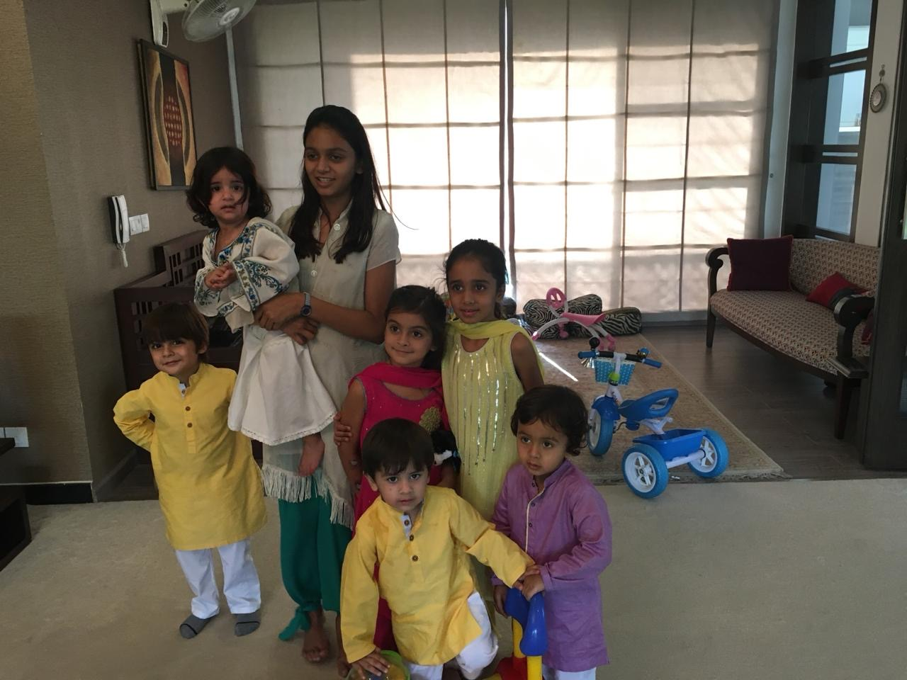
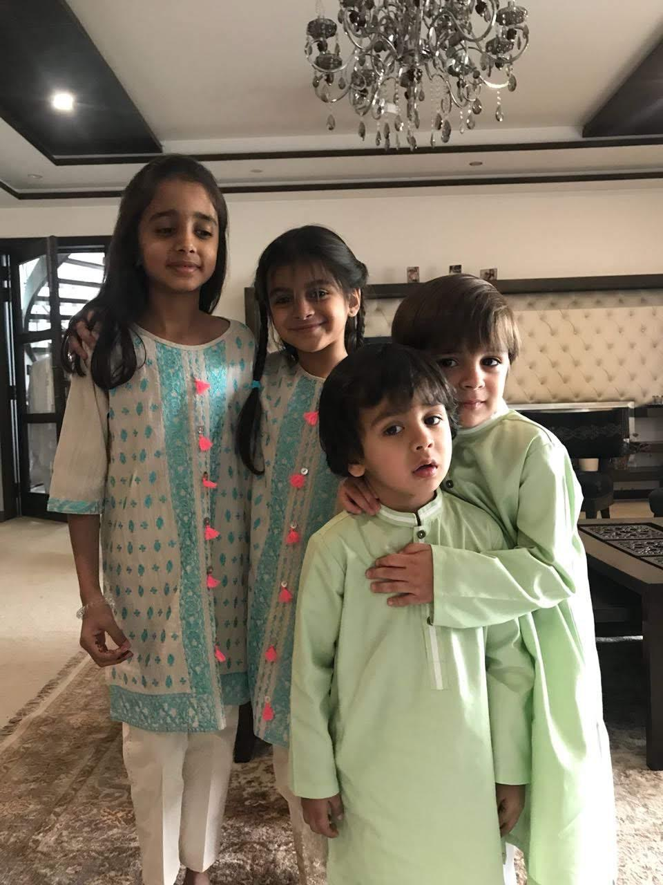
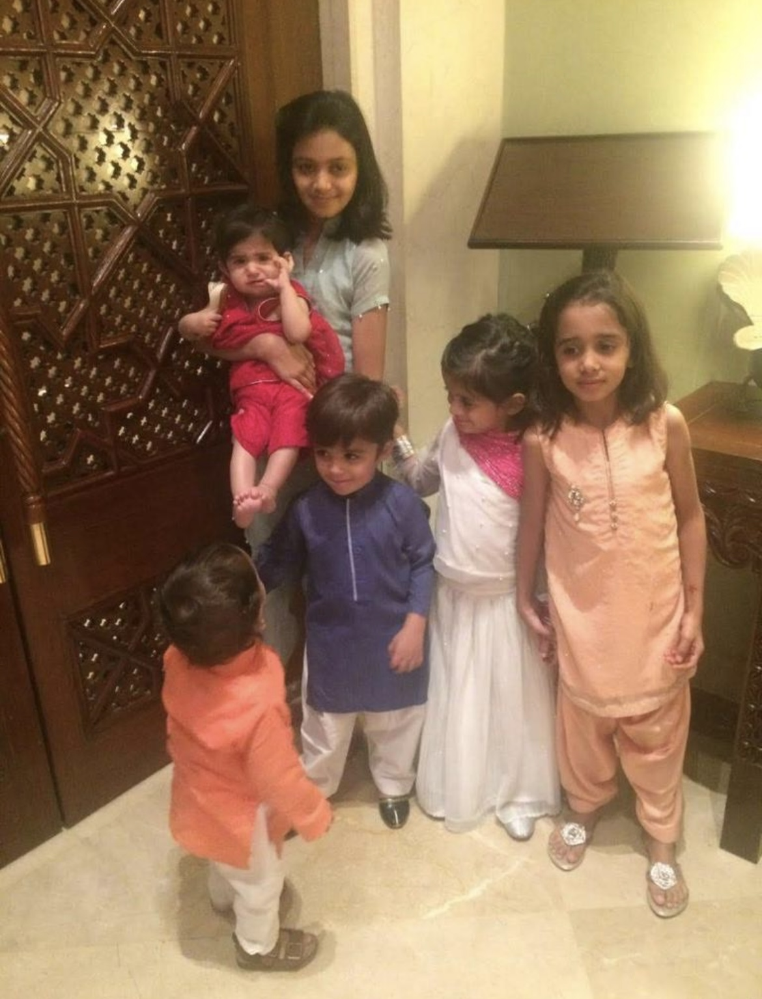

Eid Al- Fitr is a Muslim festival that marks the end of a month long fasting period during the Islamic month of Ramadan. It starts with the sighting of a new moon and it is celebrated by Muslims across the world. During this time, friends and family greet one another, presents are given, new clothes are worn and a special Eid prayer takes place.
There it is, I see it! Look!
Every year, towards the end of Ramadan my cousins and I would stand outside trying to spot the moon. Every year on this night, on “Chand Raat”, we would all gather to have dinner together and get henna applied on our hands. The next morning, we would all wake up at sunrise, shower, wear our newly stitched clothes and go to the mosque for the Eid prayer. After the prayer, the words “Eid Mubarak”, “Eid Mubarak” filled the room with family, friends and even strangers greeting and hugging each other. Following the prayer, there would be a brunch at my grandmothers home where my entire family, uncles, aunts and cousins would all come to meet each other and celebrate Eid. My grandmother would lay out a spread of various dishes such as waffles, biryani, coffee cake, karhai, kebab, ice cream floats and many more.
Depending on the city my family and I had planned to be in for Eid, our activities would differ.
Eid in Karachi
My family is originally from Karachi, Pakistan and so we have a lot of family in the city. Every other year, my family and I would go to Karachi and celebrate with them. Eid in Karachi was filled with laughter, joy and long nights. In Karachi, we would start our “meet & greet” journey from my great grand-parents home and then make our way meeting everyone in my family on my moms side and on my dads side. During this journey, we would often stop at my grandparents home, making pit stops to change our clothes and rest for a bit before leaving again. Everywhere we went, we would be offered food and sweets, elders would often call for ice cream or “gola ganda” (snow cones) for us as kids and then they would give us “Eidi”. We would spend most of our nights at my cousins home playing board games and spending time with each other before waking up again and meeting more friends and family for the second & third day of Eid.
Eid in Islamabad & the Mountains
Every few years, my grandparents have made a plan to travel to Islamabad for Eid and from there to make our way up to mountainous places such as Bhurban or Nathia Gali in Pakistan. For these trips, we would always leave a day or two in advance, so that we could pray the Eid Prayer over there. We would rent cabins in the mountains and stay there together. These trips were filled with board games, campfires and movie nights. The grown ups would sit outside at night playing poker and drinking tea while the kids would run around playing hide and seek. These trips would always be memorable and a lot of fun for everyone.
Eid in Lahore
Eid in Lahore would be the simplest compared to Eid in Karachi or in Islamabad however it was always a time that everyone looked forward to. In Lahore, we would go for dinner or lunch to each of my uncles homes on various days. Since none of my extended family lives in Lahore, we would spend the first day meeting my grandparents and uncles and aunts. On the second day we would organize a dinner for all our friends to celebrate together and then on the third day, my grandparents would have a lunch and dinner at their home and all the cousins would have a pool party at their home.